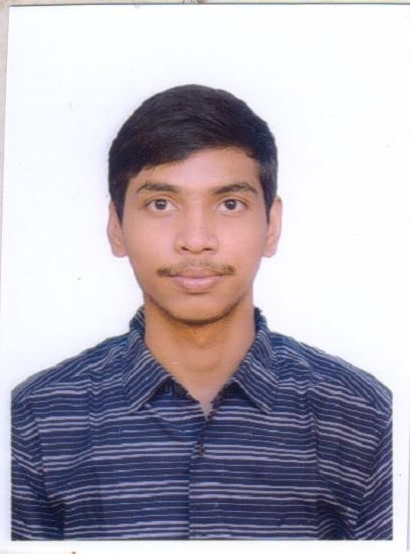

Vikash Choudhary

Summary
I am a tech enthusiast with a good background in frontend development and a passion for building efficient applications. I enjoy solving complex problems and
working with cross-functional teams to create impactful solutions. With hands-on experience in projects like Task Management System and Healthcare
Chatbot for Disease Prediction, I am always eager to learn new technologies and delivering great user experiences.
Education
B.Tech | VIT-AP | 8.59
12th Grade | B D Public School | 8.32
10th Grade | B D Public School | 9.22
Skiils
Languages: Java,HTML,CSS,SQL,JavascriptTools: : MySQL, Git, Visual Code, AWS ServicesTechnical skills: Agile Methodologies, ReactJS, Responsive Design Principles, Cloud computingSoft skills: : Collaboration, Teamwork, Communication, Problem solving
Projects
Task Management Systen
Designed a responsive web application for collaborative task management
Frontend developed using React.js with responsive design principles.
Integrated Git version control throughout the development process.
Technologies: React.js, Node.js, Express, MongoDB, Git.
Healthcare Chatbot for Disease Prediction
Developed a healthcare chatbot to predict disease based on the symptoms provided by the patient.
Collaborated with a team member to integrate the symptom analysis module using natural language processing.
Collaborated with a team member to integrate the symptom analysis module using natural language processing.
Technologies: Python, TensorFlow, NLTK, scikit-learn
Certification
AWS Certified Cloud Practitioner | Amazon | 2024
Involvement
Technical member | Students for the Exploration and Development of Space | November 2022 - Presen
Addressed technical challenges and troubleshooting issues to ensure the successful execution of club initiatives.
Collaborated with team members to define project scopes, allocate resources, and achieve milestones effectively.
Mentored club members in technical skills and best practices, fostering a collaborative learning environment.
Others
Copyright © 2024 Vikash Choudhary. All Rights Reserved.